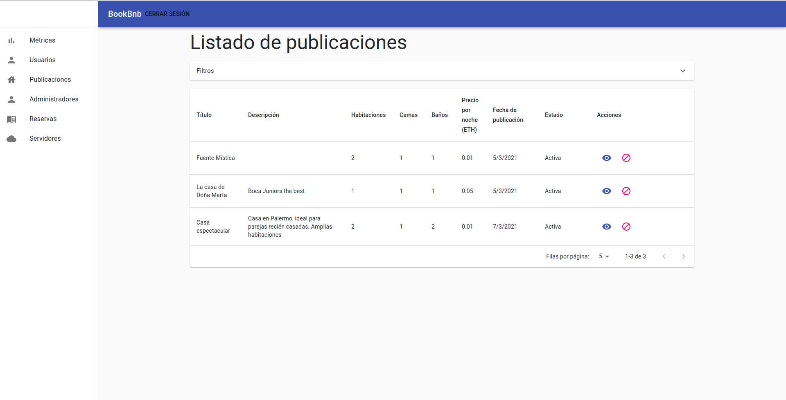
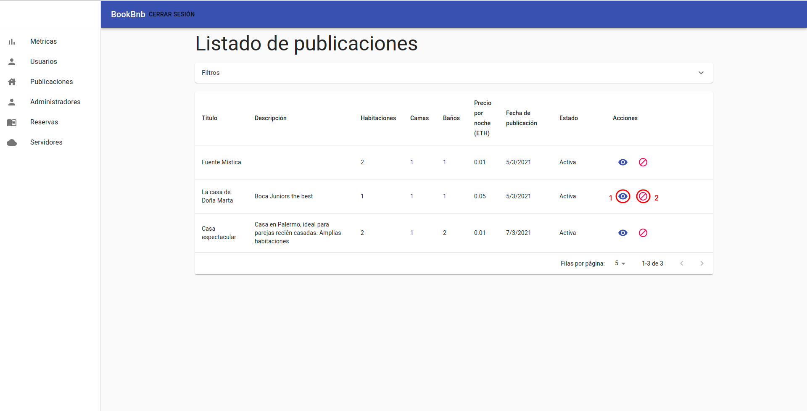
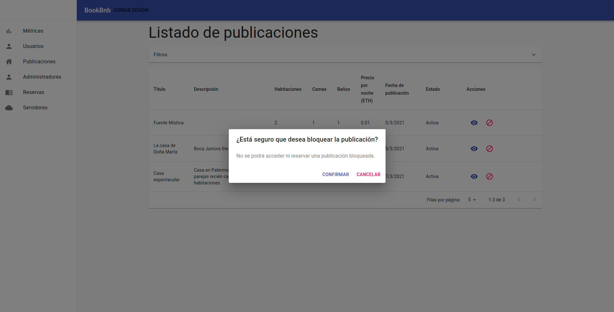
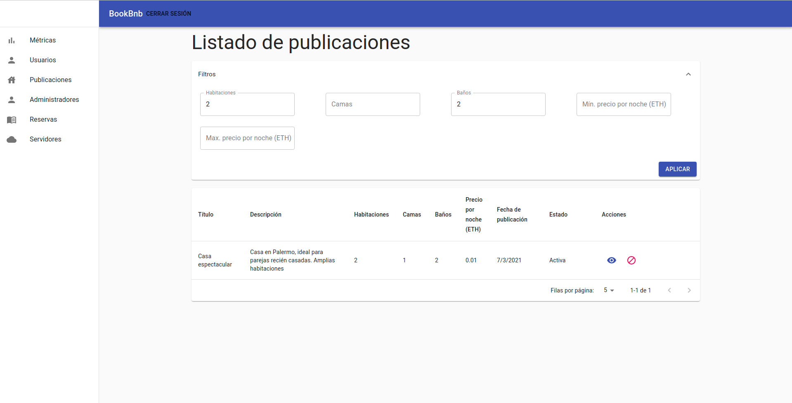
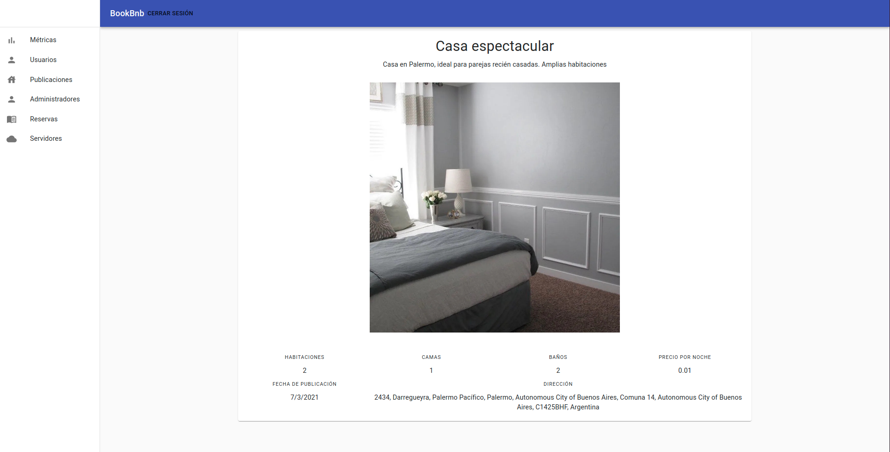

Listado de publicaciones
Al seleccionar la opción “Publicaciones” del menú, se abrirá el listado de publicaciones. En este se puede ver una tabla con todos las publicaciones de la aplicación mobile y sus datos principales, (título, descipción, cantidad de habitaciones, baños y camas, precio por noche y fecha de publicación) y su estado (que puede ser Activa o Bloqueada).

Para aquellas publicaciones que se encuentran activas, la columna “Acciones” de la tabla presenta dos botones:

El botón 1 redirige a la pantalla de visualización de la publicación (se verá en la siguiente sección). El botón 2 se utiliza para bloquear una publicación.
Bloqueo de publicación
Al presionar el botón de bloqueo en una publicación, se abre el siguiente modal:

Si se presiona “Cancelar”, se cerrará el modal, volviendo al listado de publicaciones. Si se presiona “Confirmar”, se bloqueará la publicación para la cual se clickeó el botón de bloqueo y se recargará el listado, mostrando los datos actualizados.
Filtros
Por encima de la tabla se encuentra un desplegable donde se pueden ingresar los filtros a aplicar sobre el listado.

Estos campos no son obligatorios y se pueden aplicar los filtros que se desee. Los campos indican lo siguiente:
- Habitaciones: cantidad mínima de habitaciones que puede tener la publicación.
- Camas: cantidad mínima de camas que puede tener la publicación.
- Baños: cantidad mínima de baños que puede tener la publicación.
- Mín. precio por noche (ETH): precio mínimo por noche en ETH que puede tener la publicación.
- Max. precio por noche (ETH): precio máximo por noche en ETH que puede tener la publicación.
Una vez ingresados los filtros deseados, se debe hacer click en el botón “Aplicar” dentro del desplegable. Se recargará entonces la página, apareciendo en el listado las publicaciones que cumplan con los filtros cargados.

Visualización de publicación
Al ingresar a una publicación, se podrá ver la información de la misma, que consiste en la misma información mostrada en el listado, sumado a la imagen que se cargó para la misma y su dirección.
